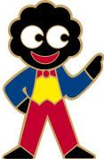

| Home | About | Topics | Rejects | Abortions |
|
|
||||||||
|
||||||||
Little Johnny is rudely awoken from his slumber by the sound of knocking
at the door of his parents' home. The hammering noise permeates the fabric
of the semi-detached house, located in the picturesque English village of
Scunthorpe. From his bedroom, the toddler hears the front door opening,
followed by an angry discourse. Soon, his father's protestations are
replaced by the sound of jackboots marching upon the fashionable laminate
wood flooring of the hallway.
Suddenly, the door to Little Johnny's bedroom bursts open and the uninvited visitor approaches his bed. The frightened infant cowers and attempts to shield himself with his favourite stuffed toy as a large hand reaches towards him. Johnny is surpised when, instead of trying to grab him, the stranger tries to wrestle the toy from his grasp! Unwilling to share his beloved friend with anyone, the child clings to his stuffed companion with brave defiance. But then, without warning, the toy's head tears loose in the stranger's hand and ejaculates stuffing onto the poor toddler's blanket. Johnny looks down at the limp, broken body of his golliwog and begins to cry... |
|||||||||||||||
|
This story may seem far-fetched, but sadly the truth is stranger than
fiction. Until recently, the golliwog was a popular toy which provided
innocent fun to many generations of children from all over the world. But
times have changed. The much-loved golliwog has now been demonised by the
liberals, and beaten with the rod of political correctness.
The proud history of the golliwog started with the character Golliwogg in the childrens' stories by Bertha Upton. The character's name was a modified version of the phrase "Jolly Western Oriented Gentleman", or "Jollywog" . It beggars belief that the liberals view the golly as a racist artefact of unenlightened times. After all, the unwieldy phrase "western oriented gentleman" bears a remarkable similarity to many of the inoffensive terms used by the politically correct to describe "persons of colour". And since when has jolity been an emotion that is commonly associated with racial oppression? In their attempts to enforce political correctness upon society, the liberals have worked to eradicate all literary references to the golliwog. It is ironic that their efforts to bowdlerise the works of Enid Blyton have proved to be even more racially insenstive than the golliwog ever was. For example, the home of the golliwogs in Blyton's Noddy stories, Golly Town, was replaced by Monkey Town. This ham-fisted attempt at censorship only serves to condition children to believe racist propaganda which claims that negroes are monkeys. In many illustrations in Blyton's books, the golliwog has been substituted for a caucasian. This echoes the unfortunate incident in which the Ford Motor Company replaced the faces of four black workers with "more acceptable" white faces in promotional photographs. Political correctness has also signalled the end to a great British institution. For over 70 years, the golliwog (pictured right) has been the mascot of the Robertson's Jams and has adorned every jar of marmalade sold by the company. Sadly, Golly's days are numbered. Robertson's have decided to abandon their venerable figurehead in favour of characters from Roald Dahl's books. While the official reason for the golliwog's retirement is a lack of brand awareness among children, it is clear that Golly's tarnished image is at least partly responsible. But is the Robertson's golliwog really so bad? Let's look at the evidence:
Clearly, the golliwog is the perfect role model for black children. If only these children chose to be more like Golly, rather than emulating the tragic lives of dead rap musicians, they could have a much brighter future. The truth of the matter is that the golliwog's only crime is that the liberals didn't invent him first. While the liberals' best attempt at indoctrinating children to date was the ill-fated Special Needs Barbie (complete with pink wheelchair, guide dog and full-time care assistant figurine) and Gimp Ken (supplied with matching leg callipers and crutches), the golliwog is the embodiment of Martin Luther King Jr.'s dream of white and black children joining together in peace.
If only we'd give him another chance, the loveable old golliwog can help
to stamp out racism by teaching children to ignore the colour of our skin.
Learning to love Golly could prove to be the first step on the road to
racial harmony. |

{kind=link}
{kind=link}